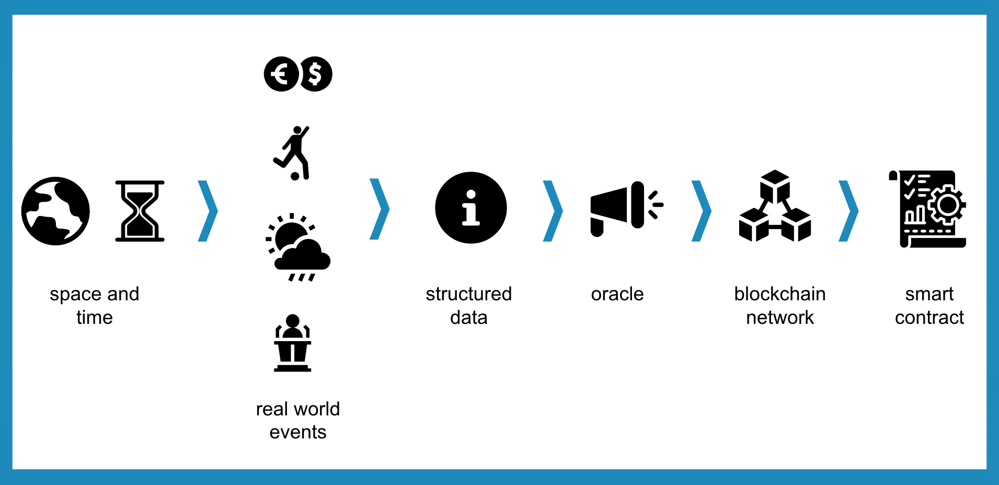
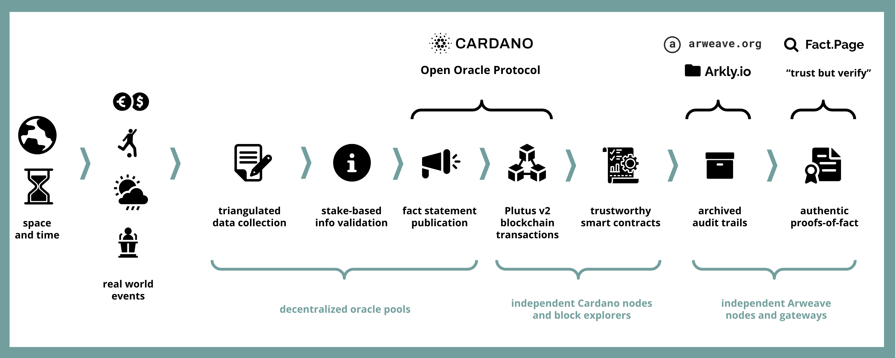

Oracles publish data about the real world as trusted inputs to blockchain smart contracts.

Orcfax implements the open-source Cardano Open Oracle Protocol (COOP) and provides Cardano developers with well-structured tools and schemas to consume trustworthy off-chain data in their smart contracts.

Orcfax is a next-generation oracle platform that completely decentralizes data collection and validation in a permissionless manner while providing full audit logs for the flow of data through the platform. The resulting "fact statements" and their metadata are stored in a permanent, standards-compliant archival repository built on the Arweave decentralized storage network
Check out our docs for a deeper dive into these topics. Or hop onto our socials to follow and join our mission to decentralize trustworthy facts.
The Orcfax platform includes a Cardano-native utility token to facilitate payments for fact statement feeds and to reward data collectors and validators in its decentralized oracle pools.
This token will also be exchangeable on the open market. The first and only way to access these tokens is to participate in the Orcfax Initial Stake Pool Offering (ISPO).
Please check back here on March 15, 2023 for a full prospectus explaining the Orcfax ISPO parameters and tokenomics.